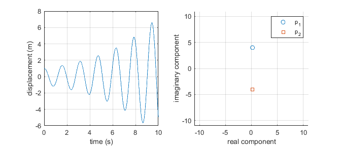

Contents
clear
clc
close all
System data for free response
wn = 4;
z = -0.05;
EOM = [1 2*z*wn wn^2];
x_0 = 1;
v_0 = 0;
tt = linspace(0,10,1000);
p=roots(EOM)
if abs(z) < 1
A = sqrt(wn^2*x_0^2+v_0^2)/wn;
phi = atan((x_0*wn)/v_0);
xx = A*exp(-z*wn*tt).*sin(wn*tt+phi);
elseif abs(z) == 1
a_1 = x_0;
a_2 = v_0+wn*x_0;
xx = (a_1 + a_2*tt).*exp(z*-wn*tt);
elseif abs(z) > 1
a_1 = (-v_0 + (-z + sqrt(z^2-1) )* wn*x_0)/(2 * wn * sqrt(z^2 -1));
a_2 = (v_0 + (z + sqrt(z^2-1) )* wn*x_0)/(2 * wn * sqrt(z^2 -1));
xx = exp(-z*wn*tt) .* (a_1* exp(-wn*tt*sqrt(z^2-1)) + a_2 * exp(wn*tt*sqrt(z^2-1)));
end
p =
0.2000 + 3.9950i
0.2000 - 3.9950i
Plot the results
figure('units','inch','position',[2,2,7,3])
subplot(1,2,1)
plot(tt,xx)
xlabel('time (s)')
ylabel('displacement (m)')
grid on
subplot(1,2,2)
hold on
axis([-11,11,-11,11])
grid on
scatter(real(p(1)),imag(p(1)))
scatter(real(p(2)),imag(p(2)),'s')
legend('p_1','p_2')
xlabel('real component')
ylabel('imaginary component')
